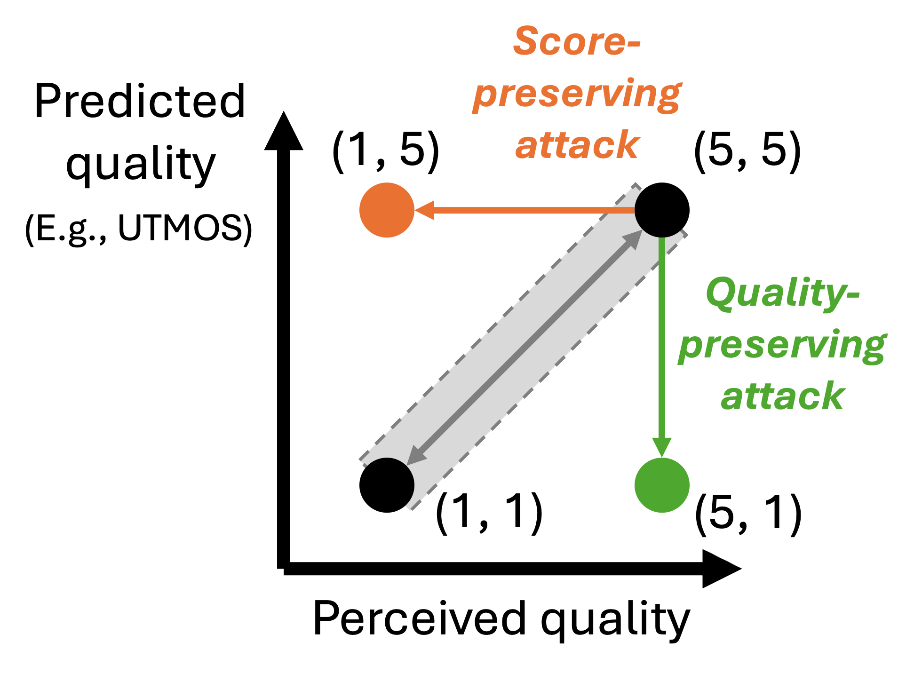

Abstract
UTMOS has become one of the most commonly used deep neural network-based speech quality assessment (SQA) metrics in speech processing research. In this paper, we attack UTMOS to probe its robustness. Starting from high-quality speech samples, we optimize the input in two directions: a score-preserving attack, which degrades perceived quality while maintaining the predicted score, and a quality-preserving attack, which lowers the predicted score while maintaining perceived quality. We consider three input spaces: raw waveform, mel spectrogram with a HiFi-GAN vocoder, and the latent space of EnCodec, a neural audio codec. Experimental results show that score-preserving attacks are effective against UTMOS. Although perfect quality-preserving attacks are more difficult, optimization in the EnCodec latent space provides the best chance of success. These results reveal failure modes of UTMOS and highlight the importance of robustness analysis for DNN-based SQA metrics.

Choose a Demo View
Use the interactive view to click points on the PESQ vs. UTMOS maps, or use the static table view to browse all samples by attack type.